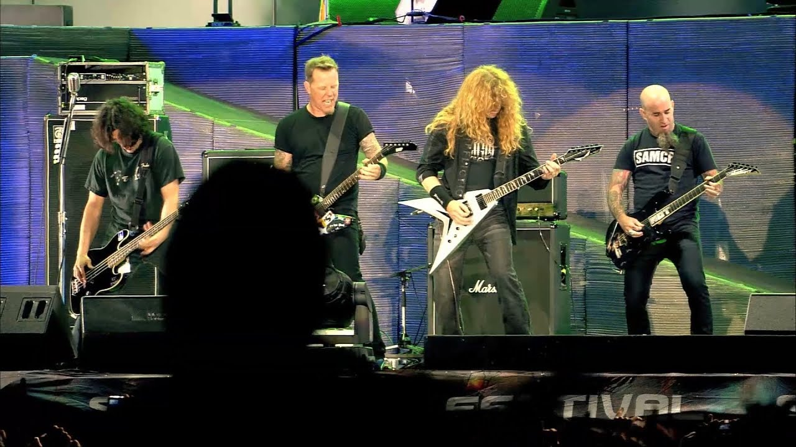
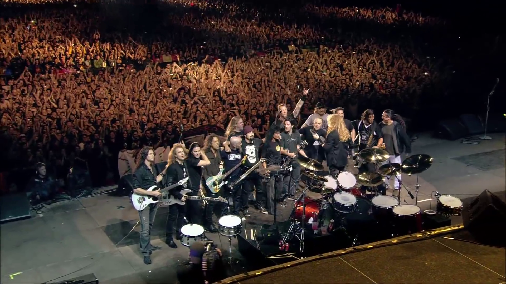
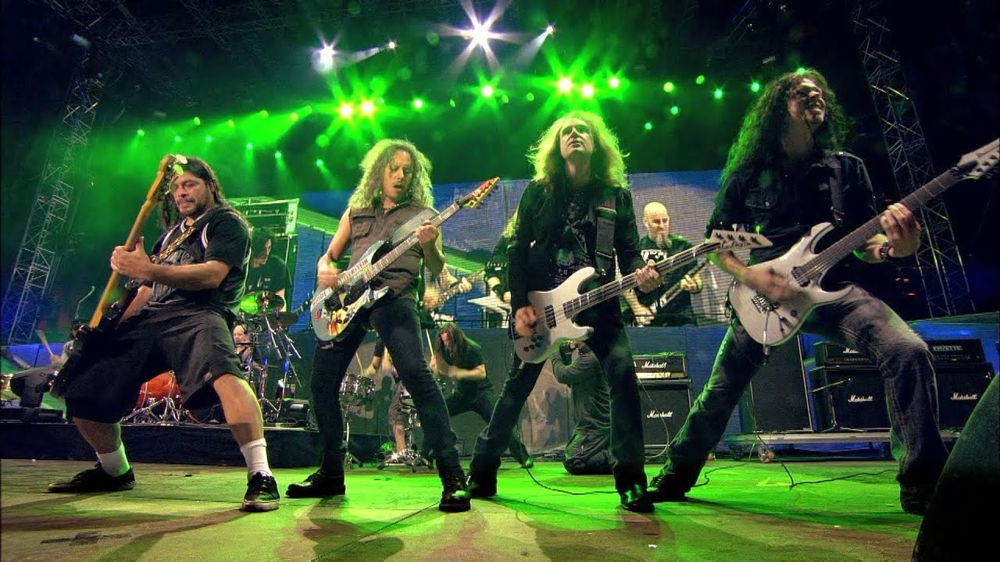

A Big Four Live in Sofia egy történelmi jelentőségű koncertfelvétel, amelyen a thrash metal négy ikonikus zenekara – Metallica, Slayer, Megadeth és Anthrax – lépett fel 2010-ben Bulgáriában. Ez a rendezvény a Big Four sorozat része volt, amely lehetővé tette a rajongók számára, hogy egyszerre láthassák a négy legnagyobb thrash metal csapatot.
A Metallica ezen a koncerten a klasszikus slágereit játszotta, energikus és feszes előadásban. A felvétel bemutatja a zenekar színpadi dinamizmusát, a közönség lelkesedését, valamint a Big Four összművészeti élményét.
A vizuális és hangzásbeli megvalósítás kiemelkedő: több kamerából vett felvételek, profi hangfelvétel és a színpadot körülvevő látványos effektek biztosítják, hogy a Big Four Live in Sofia élményét minden rajongó átélhesse.
Metallica gyakran játszott dalok a koncerten
| Dalok |
|---|
| Enter Sandman |
| Master of Puppets |
| One |
| Seek & Destroy |
| Fade to Black |
| For Whom the Bell Tolls |
| Sad But True |


